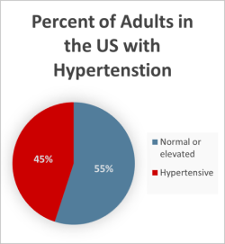
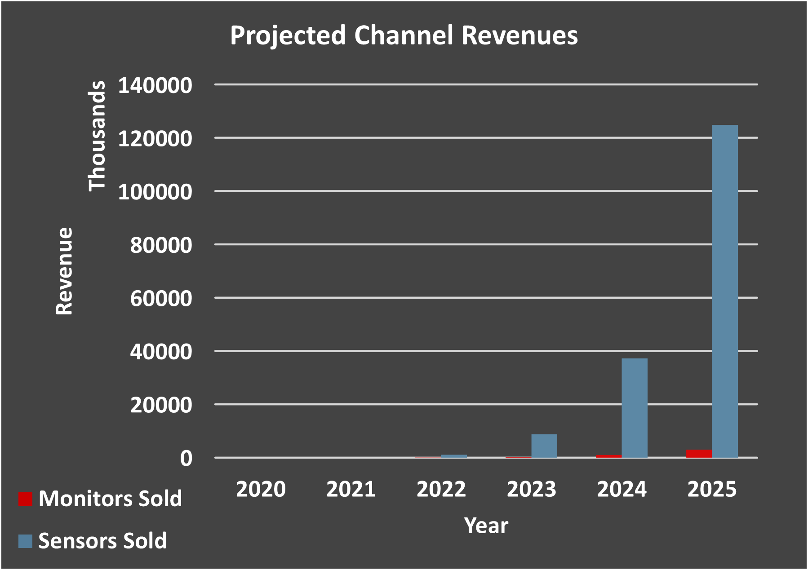

Market Strategy
Market Size
Our target market is people with hypertension. 108 million adults in the US have high blood pressure. Worldwide, that figure jumps up to 1.13 billion people. When polled on if they would use a device like this if it were available, all anesthesiologists affiliated with a hospital agreed that they would. Based on the responses there appears to be a clinical need in this field that would allow doctors to better serve their patients. Therefore, the focus at first will be on patients in hospital settings which not only aims to meet that clinical need but also allows us to see how the products function in a more controlled environment. Ultimately, we hope to expand to serve people wherever they may be so that BP monitoring is as convenient as possible.
Projected Revenue
The projected revenue is shown on the chart on the right. These figures are based on the assumption that these products are being used postoperatively after <3% of US surgeries and <1% of global surgeries, and an average of 10 monitors per hospital with 3 sensors being used per day per monitor. Despite being priced well under the competition, the sensors are the main driver for the projected revenue.